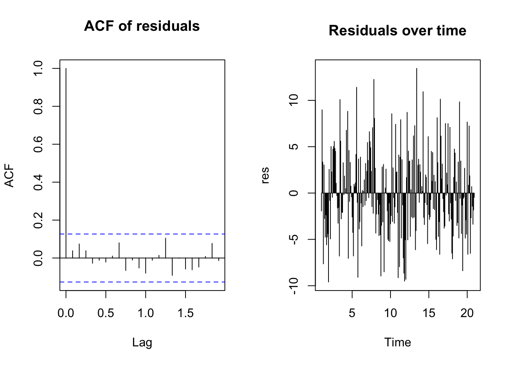

Together, they can represent a wide variety of stationary time series patterns.
2.4. Stationarity (the “don’t forget this” condition)
ARMA models assume that the time series is stationary, roughly meaning:
The mean does not change over time,
The variance does not change over time,
The correlation between \(Y_t\) and \(Y_{t-k}\) depends only on the lag \(k\), not on \(t\).
In practice:
A strong trend or strong seasonal pattern usually violates stationarity.
To handle those, we often difference the series (leading to ARIMA models).
But in this tutorial, we’ll stick to an ARMA situation where stationarity is plausible.
3. Example in R: simulating an ARMA(1,1) time series
To keep full control and avoid distracting complications, we’ll use synthetic data that behaves like:
Monthly hospital admissions (or costs) that depend on last month + shocks.
Later, you can replace the simulated series with real HEOR data (e.g., monthly admissions, budgets, utilization rates).
We’ll:
Simulate a stationary ARMA(1,1) process,
Look at its plot, ACF, and PACF,
Fit an ARMA model and interpret the output.
Code
set.seed(123) # for reproducibility# We'll simulate T = 240 months (~20 years)T <-240# True parameters for an ARMA(1,1) processphi_1 <-0.6# AR(1) coefficienttheta_1 <--0.4# MA(1) coefficientmu <-50# mean level (e.g., average admissions per month)# Simulate using arima.simarma_series <-arima.sim(n = T,list(ar = phi_1, ma = theta_1),sd =5) + mu # shift by mean# Convert to a time series object with monthly frequencyarma_ts <-ts(arma_series, frequency =12)
With enough data, the estimates should be reasonably close.
You can extract coefficients using:
Code
coef(fit_arma_11)
ar1 ma1 intercept
-0.7898372 0.9065934 49.8172911
5. Diagnostics: are we happy with the ARMA fit?
Once we fit an ARMA model, we want to check:
Are the residuals roughly white noise?
Any remaining autocorrelation?
Code
res <-residuals(fit_arma_11)par(mfrow =c(1, 2))acf(res, main ="ACF of residuals")plot( res, type ="h",main ="Residuals over time",xlab ="Time")par(mfrow =c(1, 1))

Residual diagnostics for the ARMA(1,1) model.
What we hope to see:
ACF of residuals: mostly within the random bounds (no strong autocorrelation).
Residuals over time: centered around zero, no obvious patterns.
If residuals still show strong autocorrelation:
The ARMA order might be misspecified (e.g., need ARMA(2,1) or something else),
The series might not be stationary (trend or seasonality remains),
The model might be too simple for the data.
6. Why ARMA models matter in HEOR and health policy
You might be thinking:
“Cool math, but where does this help me justify a policy or publish a paper?”
ARMA and related time series models are very useful in HEOR and health policy.
6.1. Modeling and forecasting utilization and costs
Many HEOR questions care about how things evolve over time:
Monthly hospital admissions,
Quarterly ED visits,
Annual costs per patient,
Drug utilization over time.
ARMA models can:
Capture short-term dynamics and persistence,
Provide forecasts with uncertainty intervals,
Help plan capacity, budgeting, and resource allocation.
Even simple ARMA forecasts can inform:
“How many admissions should we expect next winter?”
“What is the likely range of costs given past patterns?”
6.2. Baselines for policy evaluation
When evaluating a policy change (e.g., new screening guidelines, payment reforms), it helps to know:
What would the outcome have looked like without the policy?
ARMA or ARIMA models can be used to:
Fit a time series model to pre-policy data,
Forecast the “counterfactual” time series,
Compare observed data after the policy to the forecasted baseline.
This provides a structured and transparent baseline for impacts on:
Utilization,
Costs,
Outcomes (e.g., mortality, admissions).
6.3. Understanding dynamics, not just levels
A lot of HEOR focuses on cross-sectional averages, but time series models let us ask:
How quickly do effects fade or persist over time?
Do shocks (e.g., a pandemic wave, a supply disruption) have short-lived or long-lived impacts?
Are there recurring patterns (e.g., seasonal peaks)?
ARMA models are often the first step in:
Characterizing dynamic patterns,
Building more complex time series structures,
Combining with regression (e.g., ARIMAX models with covariates).
6.4. Foundations for more advanced time series methods
Understanding ARMA models gives you a base to:
Move to ARIMA (with differencing),
Add seasonal components (SARIMA),
Explore state-space models, Kalman filters,
Use Bayesian time series methods.
In HEOR, where datasets often include longitudinal aggregates (e.g., monthly hospital data over many years), this toolkit is highly relevant.
7. Further reading
If you’d like to go deeper into ARMA and time series methods (with plenty of R examples), here are four solid sources:
Shumway & Stoffer – Time Series Analysis and Its Applications
Accessible treatment of time series with a good mix of theory and applications, including ARMA/ARIMA models.
Hyndman & Athanasopoulos – Forecasting: Principles and Practice (online, free)
Very practical, R-focused introduction (using the forecast and fable ecosystems). Great for applied forecasting.
Box, Jenkins, Reinsel, and Ljung – Time Series Analysis: Forecasting and Control
The classic “Box-Jenkins” text. More technical, but the foundational reference for ARIMA-style modeling.
Chatfield – The Analysis of Time Series: An Introduction
Introductory but thorough, with a strong focus on understanding the data and practical modeling considerations.
Armed with these, you can go from “I once heard of ARMA” to “I routinely fit ARIMA models and argue with them in meetings” — which is, arguably, a core HEOR skill. 😄
Source Code
---title: "ARMA Models in R: When Yesterday Predicts Today"---# 1. Introduction: when your data remembers the pastMost of the models we’ve seen so far assume that observations are **independent**:- One patient’s cost doesn’t depend on another’s,- One person’s utility score doesn’t depend on someone else’s.But in **time series**, your data absolutely remembers the past:- Monthly hospital admissions this month look a lot like last month,- Daily ED visits are higher on Mondays (because… Mondays),- Quarterly spending tends to follow trends and cycles.If you try to ignore this dependence and just throw everything into a simpleregression, your residuals will quietly revolt and become **autocorrelated**.This is where **ARMA models** step in:- AR = **Autoregressive**: today depends on **past values** of the series.- MA = **Moving Average**: today depends on **past shocks** (errors).- ARMA = a combo of both: your series is influenced by what it *used to be* and the shocks it *used to receive*.In this tutorial we will:- Introduce AR, MA, and ARMA models (gently, with math),- Fit an ARMA model in R (using synthetic data you can map to HEOR concepts),- Check diagnostics and interpret the model,- Discuss why ARMA-type models are useful in **HEOR and health policy**,- Provide a few classic references if you want to go deeper.---# 2. Foundations: AR, MA, and ARMA in plain languageWe’ll consider a time series $Y_t$ observed at equally spaced times(e.g., months, quarters, years).Think of $Y_t$ as:- Monthly hospital admissions,- Monthly average cost per patient,- Quarterly mortality rates, etc.## 2.1. Autoregressive (AR) modelsAn **autoregressive model of order $p$**, written AR($p$), says:> Today’s value is a linear combination of **previous values** of the series,> plus some noise.Formally:$$Y_t = \phi_1 Y_{t-1} + \phi_2 Y_{t-2} + \cdots + \phi_p Y_{t-p} + \varepsilon_t,$$where:- $\phi_1, \dots, \phi_p$ are autoregressive coefficients,- $\varepsilon_t$ is white noise (mean zero, constant variance, uncorrelated).Example intuition:- AR(1): $Y_t$ depends on $Y_{t-1}$. If $\phi_1$ is close to 1, the series is **highly persistent**.## 2.2. Moving Average (MA) modelsA **moving average model of order $q$**, written MA($q$), says:> Today’s value depends on **current and past shocks** (errors), not on past values of $Y_t$ directly.Formally:$$Y_t = \mu + \varepsilon_t + \theta_1 \varepsilon_{t-1} + \theta_2 \varepsilon_{t-2} + \cdots + \theta_q \varepsilon_{t-q},$$where:- $\mu$ is the mean (or intercept),- $\theta_1, \dots, \theta_q$ are moving average coefficients,- $\varepsilon_t$ is white noise.Intuition:- MA(1): today’s value is influenced by today’s shock and last period’s shock.- Shocks have **short memory**: after a few periods, their impact fades.## 2.3. ARMA models: combining AR and MAAn **ARMA($p, q$)** model combines both AR and MA parts:$$Y_t = \phi_1 Y_{t-1} + \cdots + \phi_p Y_{t-p} + \varepsilon_t + \theta_1 \varepsilon_{t-1} + \cdots + \theta_q \varepsilon_{t-q}.$$Key ideas:- The AR part captures **dependence on past levels**.- The MA part captures **dependence on past shocks**.- Together, they can represent a wide variety of **stationary** time series patterns.## 2.4. Stationarity (the “don’t forget this” condition)ARMA models assume that the time series is **stationary**, roughly meaning:- The mean does not change over time,- The variance does not change over time,- The correlation between $Y_t$ and $Y_{t-k}$ depends only on the lag $k$, not on $t$.In practice:- A strong trend or strong seasonal pattern usually violates stationarity.- To handle those, we often difference the series (leading to ARIMA models). But in this tutorial, we’ll stick to an ARMA situation where stationarity is plausible.---# 3. Example in R: simulating an ARMA(1,1) time seriesTo keep full control and avoid distracting complications, we’ll use **synthetic data** that behaves like:> Monthly hospital admissions (or costs) that depend on last month + shocks.Later, you can replace the simulated series with real HEOR data (e.g., monthlyadmissions, budgets, utilization rates).We’ll:1. Simulate a stationary ARMA(1,1) process,2. Look at its plot, ACF, and PACF,3. Fit an ARMA model and interpret the output.```{r}#| label: setup-arma#| message: false#| warning: falseset.seed(123) # for reproducibility# We'll simulate T = 240 months (~20 years)T <-240# True parameters for an ARMA(1,1) processphi_1 <-0.6# AR(1) coefficienttheta_1 <--0.4# MA(1) coefficientmu <-50# mean level (e.g., average admissions per month)# Simulate using arima.simarma_series <-arima.sim(n = T,list(ar = phi_1, ma = theta_1),sd =5) + mu # shift by mean# Convert to a time series object with monthly frequencyarma_ts <-ts(arma_series, frequency =12)```## 3.1. Visualizing the time series```{r}#| label: plot-arma#| fig.cap: "Simulated ARMA(1,1) time series (e.g., monthly admissions)."plot( arma_ts,main ="Simulated Monthly 'Admissions' - ARMA(1,1) Process",ylab ="Admissions",xlab ="Time (months)")```Even with randomness, you should see:- Short-term persistence (high values followed by high values),- Fluctuations around a relatively stable mean (no strong trend).## 3.2. ACF and PACF: the fingerprints of dependenceThe **autocorrelation function (ACF)** and **partial autocorrelation function (PACF)** help diagnose AR and MA behavior.```{r}#| label: arma-acf-pacf#| fig.cap: "ACF and PACF of the ARMA(1,1) series."#| fig-show: holdpar(mfrow =c(1, 2))acf(arma_ts, main ="ACF of simulated ARMA(1,1)")pacf(arma_ts, main ="PACF of simulated ARMA(1,1)")par(mfrow =c(1, 1))```Very roughly (rules of thumb, not laws of physics):- AR processes: PACF tends to cut off after lag $p$, ACF decays gradually.- MA processes: ACF tends to cut off after lag $q$, PACF decays gradually.- ARMA processes: both ACF and PACF decay more complexly.In our example, the pattern is consistent with an ARMA-like process.---# 4. Fitting an ARMA model in RWe can fit ARMA models using the base R `arima()` function. For an ARMA($p, q$) model (no differencing), set `order = c(p, 0, q)`.Let’s (cheekily) pretend we don’t know the true parameters and fit an ARMA(1,1).```{r}#| label: fit-arma#| message: false#| warning: falsefit_arma_11 <-arima(arma_ts, order =c(1, 0, 1))fit_arma_11```The output will show:- Estimated AR(1) coefficient,- Estimated MA(1) coefficient,- Intercept (which relates to the mean),- Residual variance.Compare the estimates with the true values:- True AR(1): 0.6 - True MA(1): -0.4 - True mean: 50With enough data, the estimates should be reasonably close.You can extract coefficients using:```{r}coef(fit_arma_11)```---# 5. Diagnostics: are we happy with the ARMA fit?Once we fit an ARMA model, we want to check:1. Are the **residuals** roughly white noise?2. Any remaining autocorrelation?```{r}#| label: arma-residuals#| fig.cap: "Residual diagnostics for the ARMA(1,1) model."#| fig-show: holdres <-residuals(fit_arma_11)par(mfrow =c(1, 2))acf(res, main ="ACF of residuals")plot( res, type ="h",main ="Residuals over time",xlab ="Time")par(mfrow =c(1, 1))```What we hope to see:- ACF of residuals: mostly within the random bounds (no strong autocorrelation).- Residuals over time: centered around zero, no obvious patterns.If residuals still show strong autocorrelation:- The ARMA order might be misspecified (e.g., need ARMA(2,1) or something else),- The series might not be stationary (trend or seasonality remains),- The model might be too simple for the data.---# 6. Why ARMA models matter in HEOR and health policyYou might be thinking:> “Cool math, but where does this help me justify a policy or publish a paper?”ARMA and related time series models are very useful in HEOR and health policy.## 6.1. Modeling and forecasting utilization and costsMany HEOR questions care about **how things evolve over time**:- Monthly hospital admissions,- Quarterly ED visits,- Annual costs per patient,- Drug utilization over time.ARMA models can:- Capture short-term dynamics and persistence,- Provide forecasts with **uncertainty intervals**,- Help plan **capacity**, **budgeting**, and **resource allocation**.Even simple ARMA forecasts can inform:- “How many admissions should we expect next winter?”- “What is the likely range of costs given past patterns?”## 6.2. Baselines for policy evaluationWhen evaluating a **policy change** (e.g., new screening guidelines, payment reforms), it helps to know:- What would the outcome have looked like **without** the policy?ARMA or ARIMA models can be used to:- Fit a time series model to pre-policy data,- Forecast the “counterfactual” time series,- Compare observed data after the policy to the forecasted baseline.This provides a **structured and transparent** baseline for impacts on:- Utilization,- Costs,- Outcomes (e.g., mortality, admissions).## 6.3. Understanding dynamics, not just levelsA lot of HEOR focuses on cross-sectional averages, but time series models let us ask:- How quickly do effects fade or persist over time?- Do shocks (e.g., a pandemic wave, a supply disruption) have short-lived or long-lived impacts?- Are there recurring patterns (e.g., seasonal peaks)?ARMA models are often the first step in:- Characterizing **dynamic patterns**,- Building more complex time series structures,- Combining with regression (e.g., ARIMAX models with covariates).## 6.4. Foundations for more advanced time series methodsUnderstanding ARMA models gives you a base to:- Move to ARIMA (with differencing),- Add seasonal components (SARIMA),- Explore state-space models, Kalman filters,- Use Bayesian time series methods.In HEOR, where datasets often include **longitudinal aggregates**(e.g., monthly hospital data over many years), this toolkit is highly relevant.---# 7. Further readingIf you’d like to go deeper into ARMA and time series methods (with plenty of R examples), here are four solid sources:1. **Shumway & Stoffer – _Time Series Analysis and Its Applications_** Accessible treatment of time series with a good mix of theory and applications, including ARMA/ARIMA models.2. **Hyndman & Athanasopoulos – _Forecasting: Principles and Practice_ (online, free)** Very practical, R-focused introduction (using the `forecast` and `fable` ecosystems). Great for applied forecasting.3. **Box, Jenkins, Reinsel, and Ljung – _Time Series Analysis: Forecasting and Control_** The classic “Box-Jenkins” text. More technical, but the foundational reference for ARIMA-style modeling.4. **Chatfield – _The Analysis of Time Series: An Introduction_** Introductory but thorough, with a strong focus on understanding the data and practical modeling considerations.Armed with these, you can go from “I once heard of ARMA” to “I routinely fit ARIMA models and argue with them in meetings” — which is, arguably, a core HEOR skill. 😄